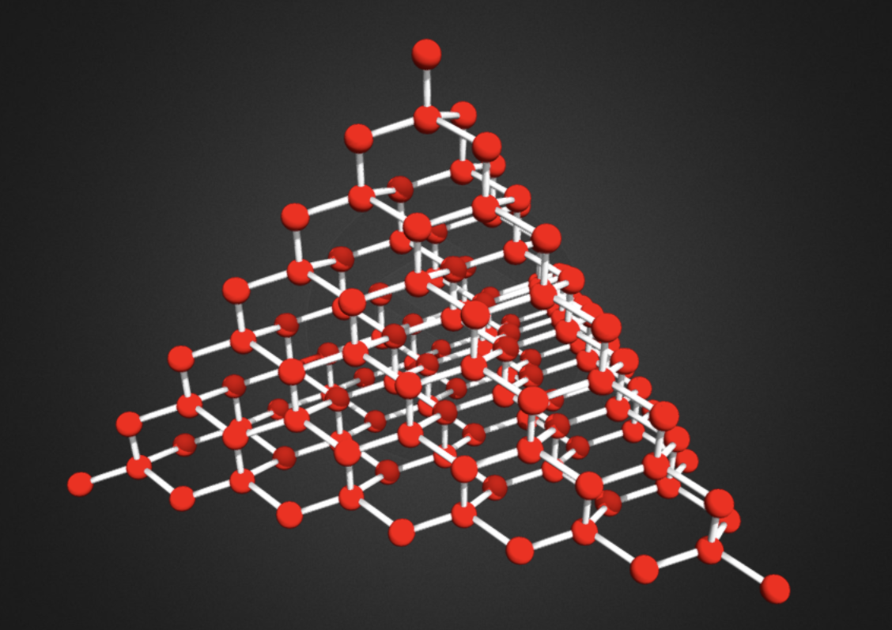

What is this all about?
Forma is an open project exploring the nature of matter, space, and time.
Under the hood, Forma brings together GRID, a model of the spacetime fabric, and MaSt (Material-Space-time), a model of matter as standing waves on compact geometry.
This website is only the introduction. The real project lives in the Forma repository on GitHub.

This project has not been proven correct. It contains a great deal of speculation and many hypotheses. But it is also backed by many numerical studies designed to test specific ideas.
Many hypotheses have been rejected. The study findings reflect that. Others are supported by computational evidence.
The project also includes a number of mathematical derivations which are largely AI-generated. These have not yet been reviewed independently. Readers are encouraged to examine them and apply their own critical scrutiny.
This project may turn out to be important, or it may turn out to be a huge coincidence. You can judge that for yourself.
Forma is a project of GotChoices.org.
The author, and founder of GotChoices.org, is an electrical engineer (not a trained physicist). The project began as a hobby and grew into a larger attempt to rethink the foundations of matter.
A direct inspiration for this project was the confined-photon idea explored by Williamson and van der Mark, introduced to me in this video overview.
AI has been used heavily in research assistance, coding, derivations, drafting, and literature comparison. The human role has been to choose the direction, posit every imaginable hypothesis, direct their testing, and then evaluate the results. Where a hypothesis is shown to be computationally testable, the results speak for themselves. Otherwise, the question is typically kept open.
A certain amount of AI slop has admittedly been generated. Hopefully, the iterative human review process has sifted through this to find the best results possible.
For questions or comments, contact info@formares.org.
This work is licensed under Creative Commons Attribution-ShareAlike 4.0 International (CC BY-SA 4.0). See the license file in the repository for details.